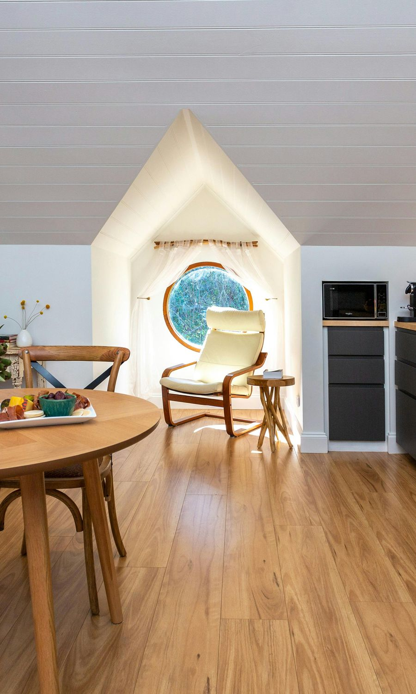
Oakbank, in the Adelaide Hills
A cottage for two in a rambling country garden.
One bedroom, a wood heater, a bath under a skylight and another one outside on the patio. Hahndorf is about 11 km away.
Step out into the garden.
Nooks, sheltered corners and a garden studio, all kept for guests. There's only ever one booking at a time.
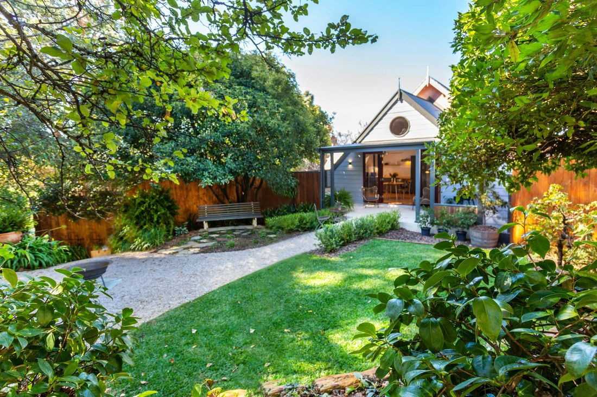
Down the garden path
From the patio and its outdoor bath, out past the fire pit and under the trees to the little garden studio.
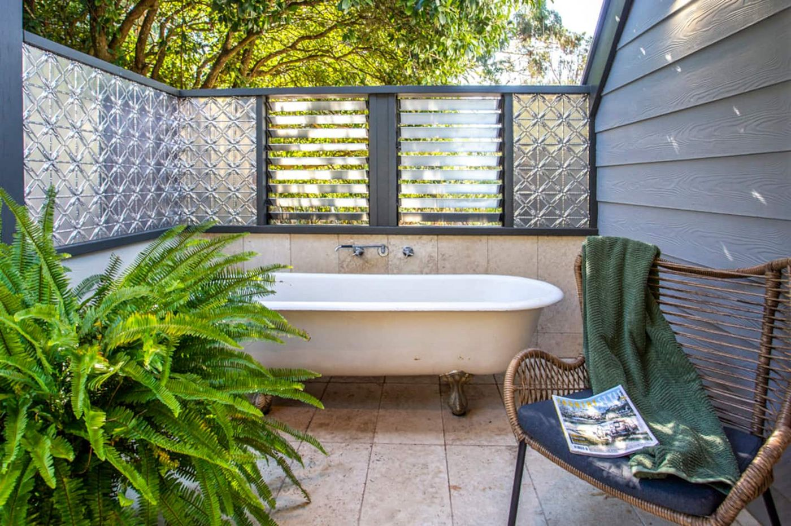
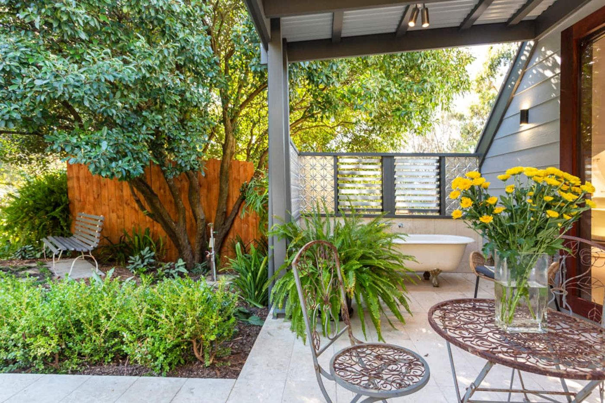
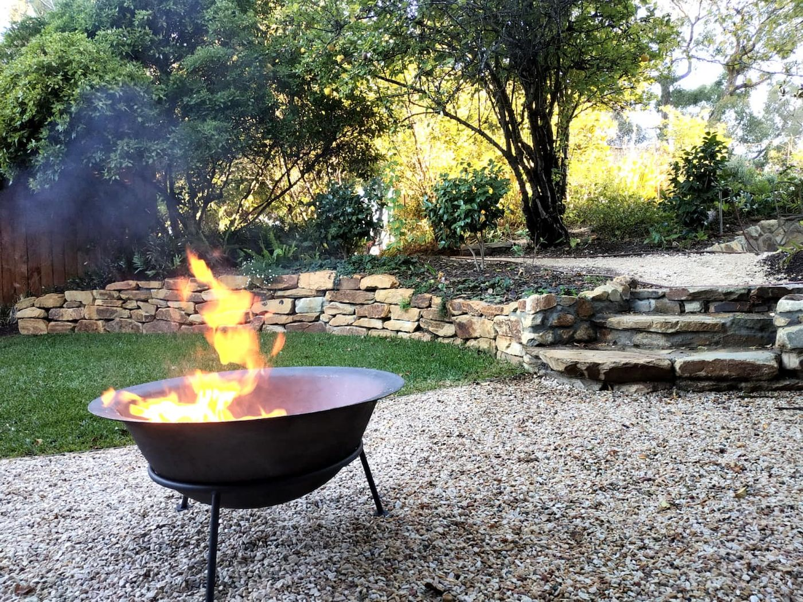
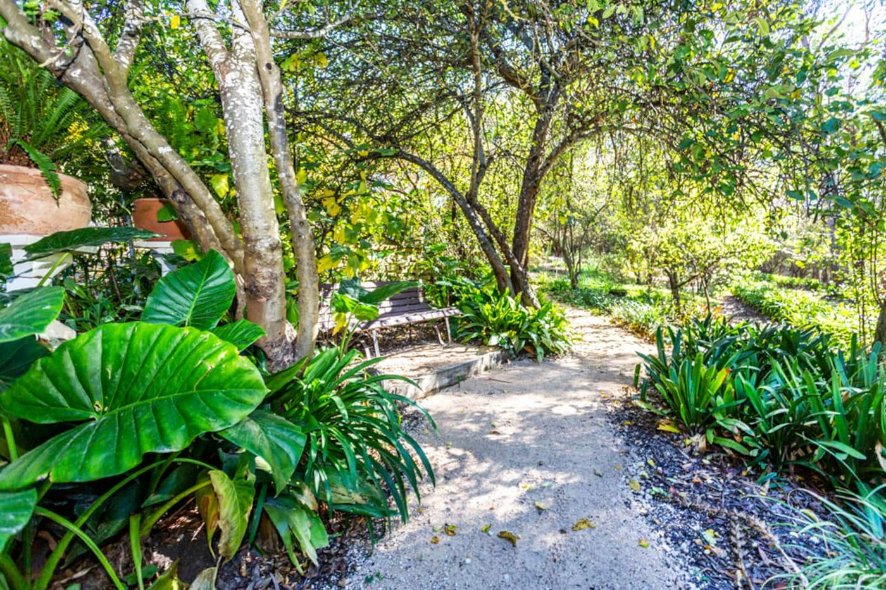
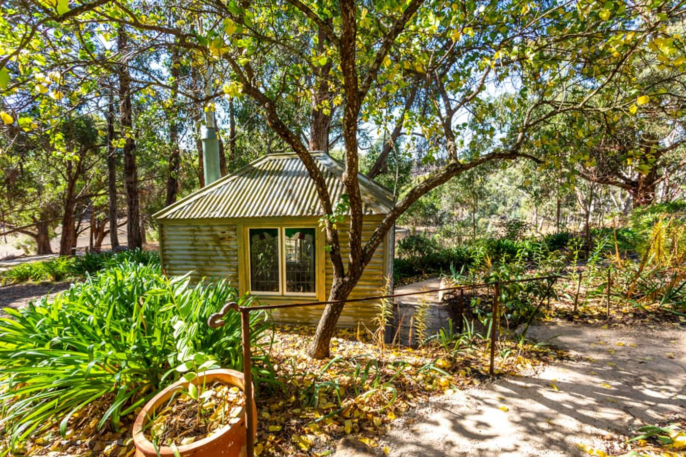
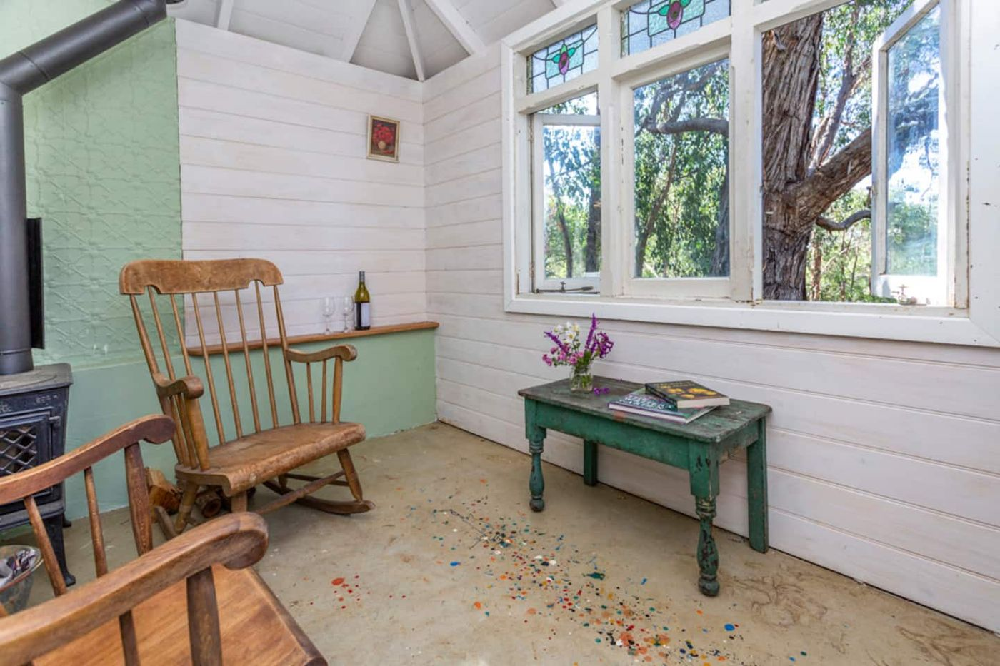
Inside
One bedroom, one bathroom and a kitchen and lounge under a raked white ceiling. Glass doors open onto the patio.
- Sleeps 2
- A king bed with cotton linen.
- Bathroom
- A full-size bath and twin showers, plus the outdoor bath on the patio.
- Warm
- A slow-combustion wood heater, and split-system air conditioning.
- Kitchen
- Fully equipped, with an oven, dishwasher and Nespresso machine. Barbecue on the patio.
- Also
- 55-inch TV with Netflix, a sound system, fast wifi.
- Arrive
- Self check-in with a smart lock. Two-night minimum.
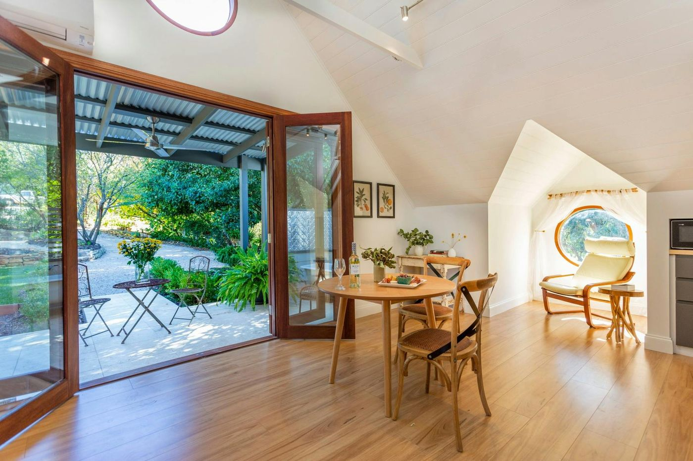
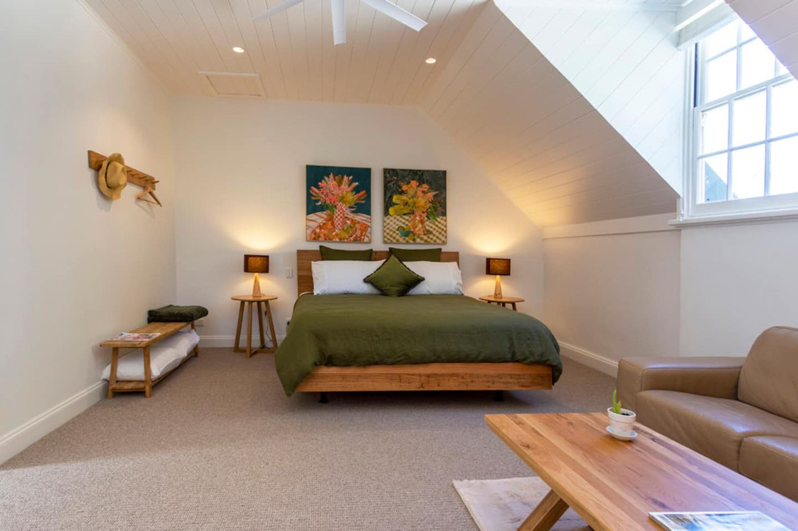
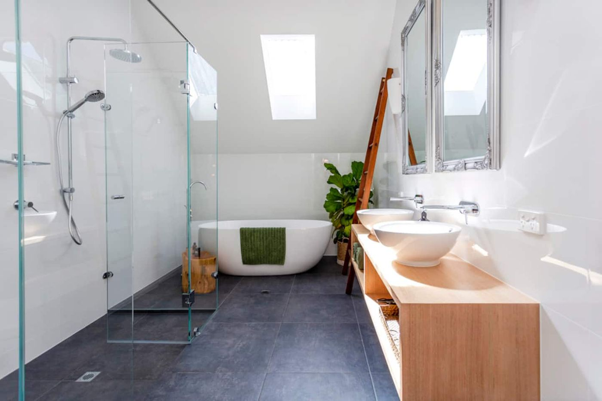
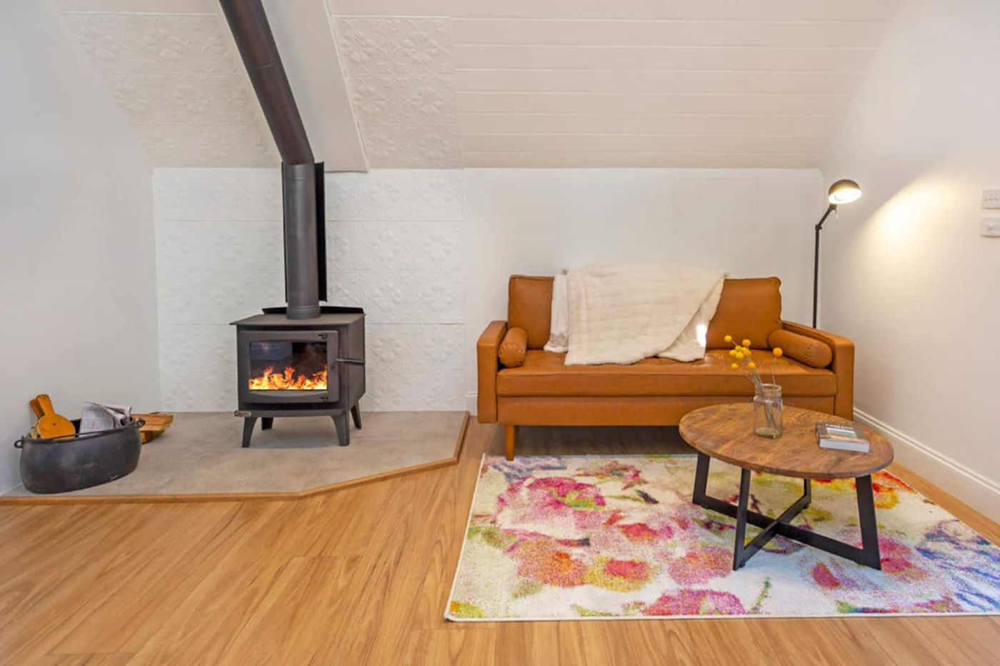
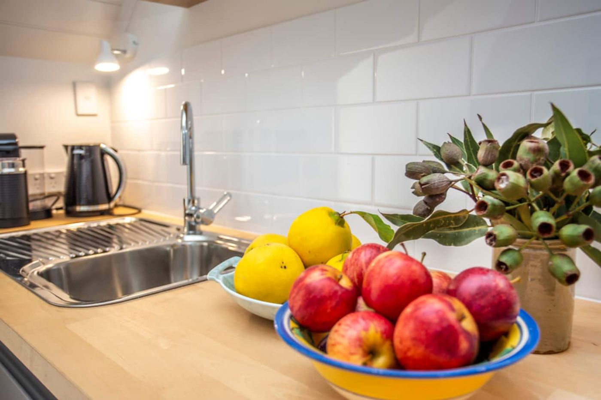
Guests
4.98from 107 reviews on Airbnb, in the top 10% of eligible listings there
Your hosts are Geoff and Tracey, Superhosts with five years of hosting on Airbnb.
"A little slice of paradise in the hills."
Irene, Airbnb
"The fresh flowers throughout the house that were collected from their gardens, down to the thoughtful amenities like fresh petals and bath salts for the bath."
Cassie, Airbnb
"Extremely quiet with a beautiful private garden, this is a place where you can put down your mental load."
David, Airbnb
Getting here
Oakwood Retreat sits in the gardens of the main property near Oakbank, among the Adelaide Hills wineries, cafes and small towns.
| By car, roughly | Distance |
|---|---|
| Oakbank main street | 4 km |
| Balhannah | 4 km |
| Woodside | 9 km |
| Hahndorf | 11 km |
| Lobethal | 14 km |
| Adelaide city centre | 32 km |
| Adelaide Airport | 39 km |
Road distances on OpenStreetMap, rounded.
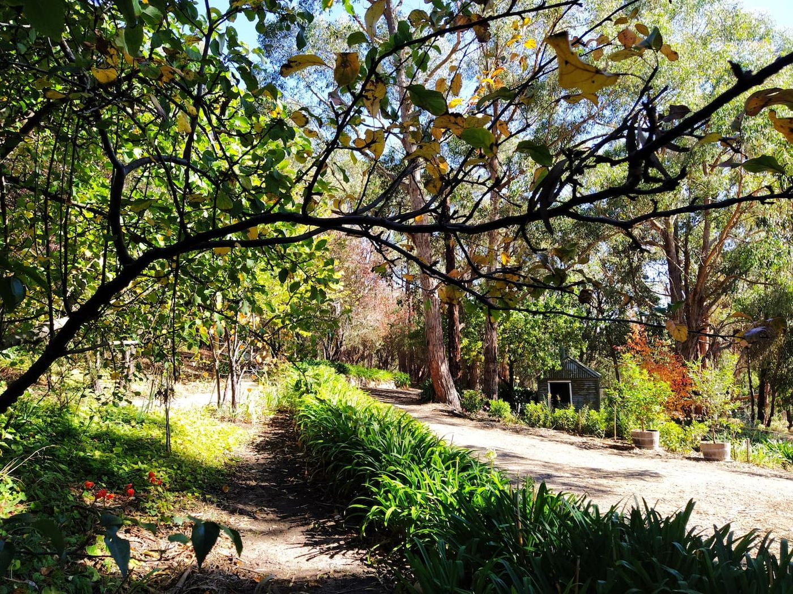
Check dates
From A$365 a night for two, with a two-night minimum.
Rates from the South Australia tourism listing, A$365 to A$435 a night. Airbnb shows the exact total for your dates.
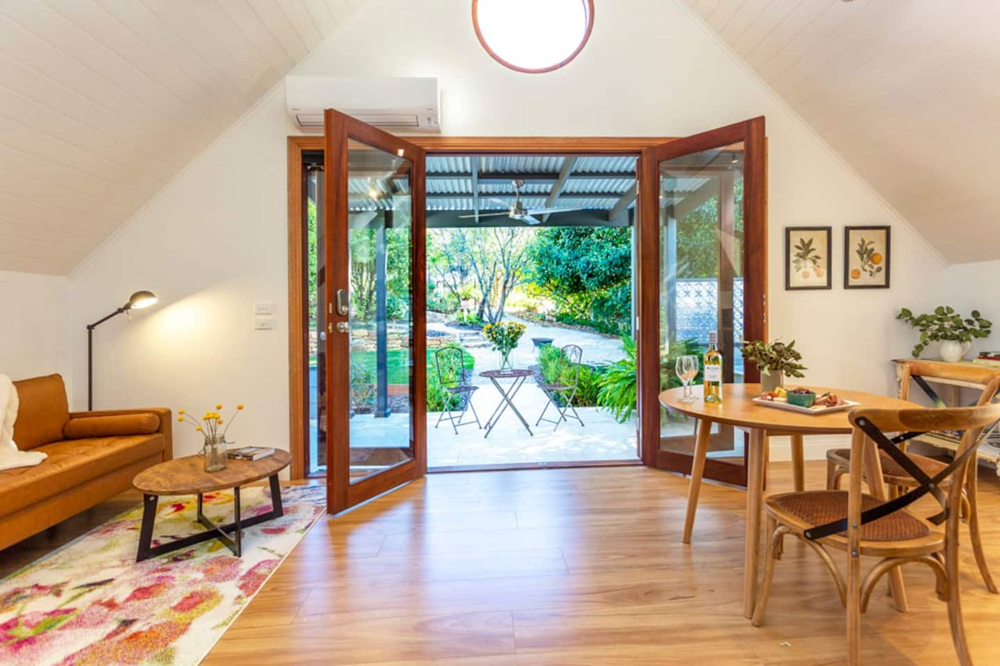
- Guests
- Up to two.
- Minimum
- Two nights.
- Arrive
- Self check-in.
Oakbank, Adelaide Hills.
One bedroom for two, with the garden and the fire pit to yourselves.